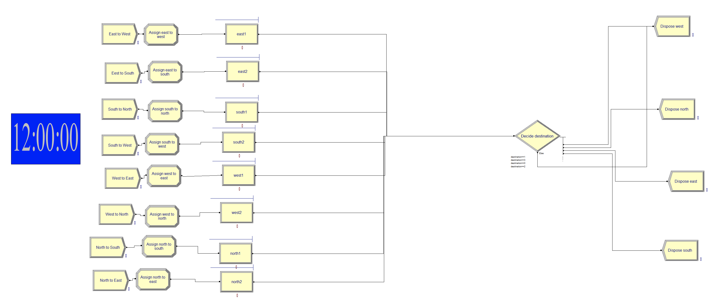
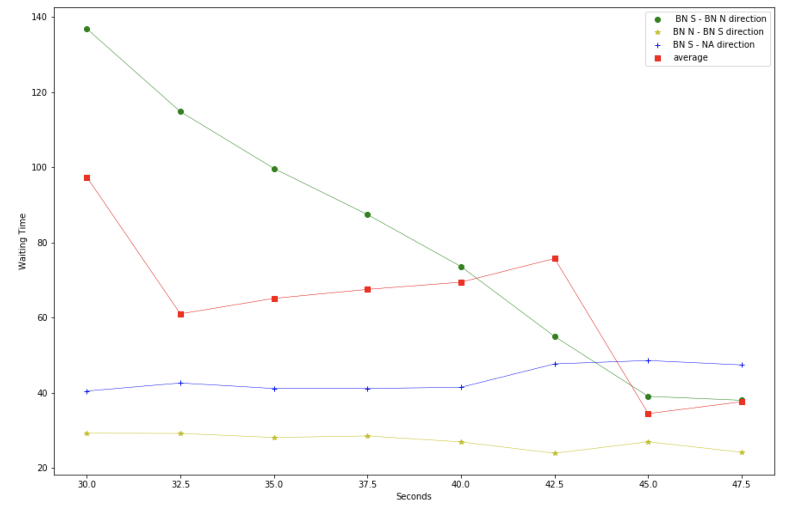
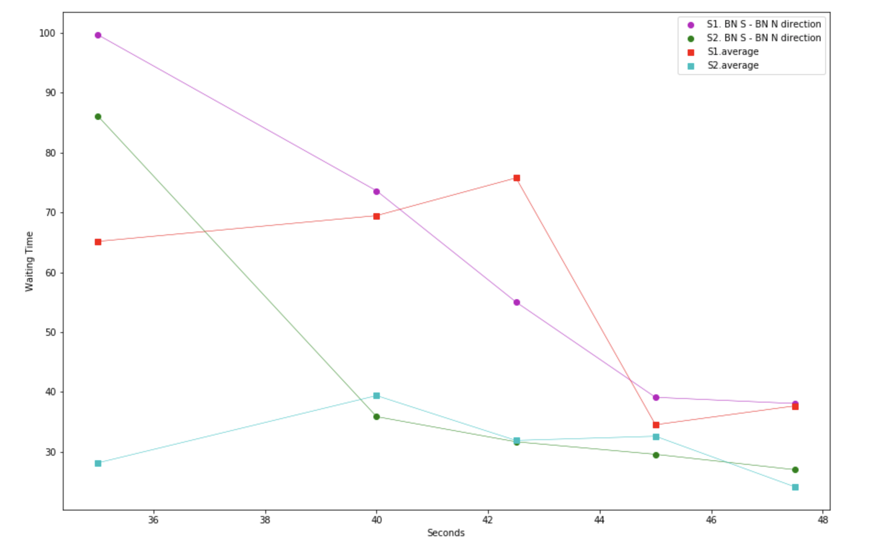

Traffic Light Simulation
This is a course project from IYSE 6644 Simulation at Georgia Institute of Technology. I did this project along with teammate Jacob.
The main task of this project is to simulate traffic lights sysytem and to opimizing the efficiency of intersections. We choose a specific intersection which has severe traffic congestion problem in Johannesburg, South Africa. First we collected data and studied the main cause for the congestion. And then came up with two plans, built the model, conducted the simulation to test which plan is better for the specific situation and how to optimize this intersection.
Technologies
- Arena
- Python
- Latex
1. Arena simulation
2. Results
In order to solve this problem and to improve the efficiency of the traffic based on real data. We tested two traffic light timing scenarios: 1. Increasing the green light time for busy directions while keeping other directions fixed. 2. Increasing the green light time for busy directions while keeping cycle time the same. According to the simulation results, the second scenario proves to be significantly more efficient than the first one.
 